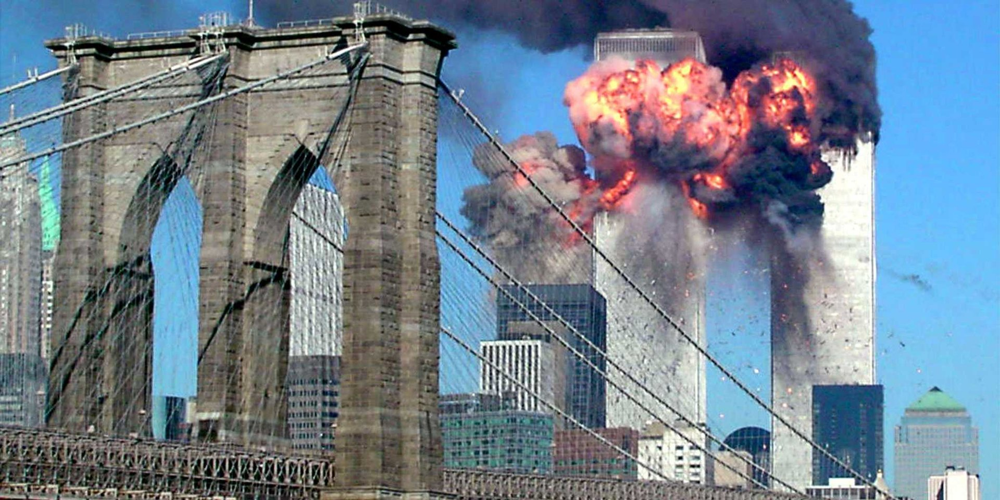
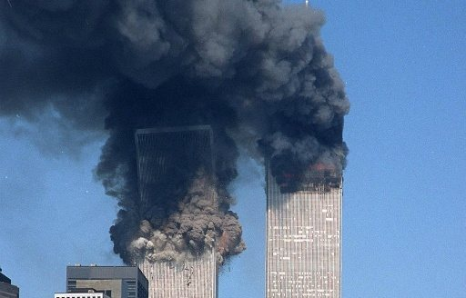

HISTORY OF: 911
|  | On September 11, 2001, 19 militants associated with the Islamic extremist group al-Qaeda hijacked four airplanes and carried out suicide attacks against targets in the United States. Two of the planes were flown into the twin towers of the World Trade Center in New York City, a third plane hit the Pentagon just outside Washington, D.C., and the fourth plane crashed in a field in Pennsylvania. Almost 3,000 people were killed during the 9/11 terrorist attacks, which triggered major U.S. initiatives to combat terrorism and defined the presidency of George W. Bush. |
|
Less than 15 minutes after the terrorists struck the nerve center of the U.S. military, the horror in New York took a catastrophic turn when the south tower of the World Trade Center collapsed in a massive cloud of dust and smoke. The structural steel of the skyscraper, built to withstand winds in excess of 200 miles per hour and a large conventional fire, could not withstand the tremendous heat generated by the burning jet fuel. At 10:30 a.m., the north building of the twin towers collapsed. Only six people in the World Trade Center towers at the time of their collapse survived. Almost 10,000 others were treated for injuries, many severe. |
 |